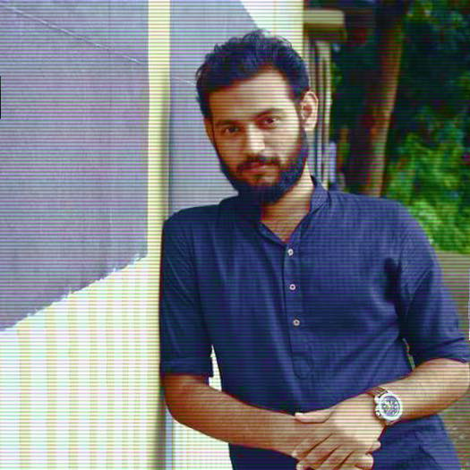

07-18-2018
To
The Managing Director,
Global Research & Marketing,
House:17/6/1 Tolarbag(Gr Flr),
Mirpur:01,Dhaka-1216.
Bangaladesh.
Subject: Application for the position of “Trainee Research Executive”
Dear Sir,
A study of your advertisement filing up a post of “Trainee Research Executive” has been found on the noted from Online convinced me to offer my candidature for your kind perusal.
I have sound knowledge of qualitative and quantative research, experience on developing M & E tools, analyzing qualitative and quantitative data, writing qualitative reports, liaising with internal departments & external agencies, inducting strong communication strategy and coordinating with the staffs.
Attached copy of my CV will help you understand more my qualifications, experiences, academic credentials and aptitude in this regard. I have the confidence that I will be able to perform my duties satisfactorily if the job is offered to me.
If you agree that my services would be valuable to the Global Research & Marketing, I would very much like to meet in person to learn more about your needs and present my skill. For any query, please call me at +8801767516384 or email at mhhakim8@gmail.com.
Thank you for your time and review of the enclosed resume. I look forward to hearing from you.
Sincerely yours,
Abdul Hakim
Room No:114
Sir A.F.Rahman Hall
University of Dhaka.
Dhaka-1000.
Cell No: +8801767516384.
E-mail: mhhakim8@gmail.com
Curriculum Vitae of
Md. Abdul Hakim

MAILING ADDRESS
Room No: 114,
Sir A.F. Rahman Hall,
University of Dhaka,
Dhaka-1000.
Cell No: +8801767516384
E-mail: mhhakim8@gmail.com
Cell No: +8801767516384
E-mail: mhhakim8@gmail.com
CAREER OBJECTIVES:
I would like to engage myself & build my career in an organization and institution which is rapidly expanding and offers sophisticated & advanced potentials at national and international level.
KEY EXPERTISE:
I have achieved technical competencies on managing social survey, developing data collection instruments, reviewing literature, analyzing both qualitative and quantitative data, using Excel and to analyze data, monitoring field work, writing report, developing research proposals & translating efficiently (from English to Bengali/ Bengali to English).
ATTRIBUTES:
Hard-working, Self-motivated, Pro-active, Innovative, Responsible, Honest, having strong drive, Right mind-set, Courageous, Resilience, Flexible and has ability to analyze and make sound decisions, Strong inter-personal & strong networking skills.
EDUCATION:
MASTER OF SOCIAL SCIENCE (M.S.S), Subject – SOCIOLOGY, Year Passed- 2009 (Held in 2011), Published In – 2012 (May), Result – CGPA-3.43/4, at University of Dhaka.
HIGHER SECONDARY CERTIFICATE (H.S.C), Group – SCIENCE, Year Passed- 2003, Result- First Class (4.30), at New Govt. Degree College, Rajshahi.
SECONDARY SCHOOL CERTIFICATE (S.S.C), Group - SCIENCE, Year Passed- 2001, Result- First Class (4.50), at North Bengal Sugar Mills High School, Natore.
COMPUTER SKILLS:
MS Word, MS Excel, Internet browsing, Blogging and e-mailing. Strong networking skills on social networking sites (Facebook, Twitter and Skype)
PERSONAL PROFILE:
Name : Md. Abdul Hakim
Father’s Name : Md. Sheraj Uddin
Mother’s Name : Mst. Hajera Khatun
Present address : Room#114, Sir A.F. Rahman Hall, University of Dhaka.
Permanent Address : Vill:-Keshobpur, P.O:-Gopalpur, P.S:-Lalpur, Dist:- Natore.
Cell number : 01767-516384
Date of birth : April 6, 1986
Home District : Natore
Marital Status : Single
Religion :Islam
Nationality :Bangladeshi (by birth)
Blood Group : A+
Sex :Male
Passport No. :AA7273010
TRAINING & COURSES COMPLETED:
Awarded certificate after successful completion of a training on “Advanced Course on Research Methodology on Gender Studies”, organized by Center for Women & Children Studies (CWCS), University of Dhaka, August 6-20, 2009
EXPERIENCE:
One month TSO Trainee At Renata Ltd. Dhaka, Bangladesh.
LIST OF PUBLICATIONS:
- Research Monograph on “The Impact of Environment pollution and health hazard upon the people living on the bank of river Burigangha”- Submitted to the department of Sociology, University of Dhaka.
- Impact of globalization on human health”- An assignment submitted to the department of Sociology, University of Dhaka.
- How HIV/AIDS spread and how to control AIDS in human health”- An assignment submitted to the department of Sociology, University of Dhaka.